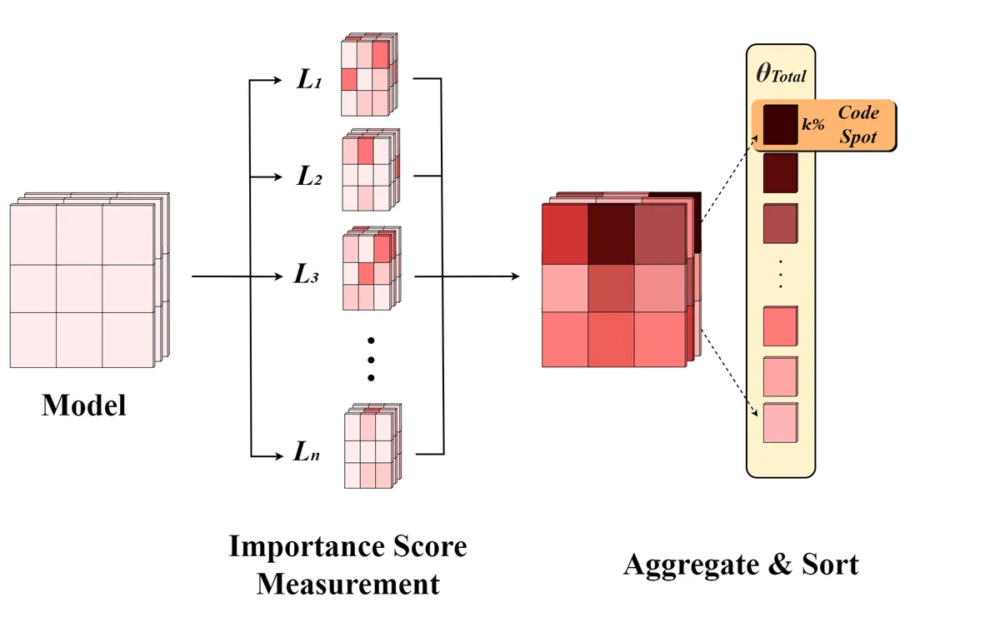

ACL 2026 · Findings
Exploring Coding Spot: Understanding Parametric Contributions to LLM Coding Performance

Abstract
Large Language Models (LLMs) have demonstrated notable proficiency in both code generation and comprehension across multiple programming languages. However, the mechanisms underlying this proficiency remain underexplored, particularly with respect to whether distinct programming languages are processed independently or within a shared parametric region. Drawing an analogy to the specialized regions of the brain responsible for distinct cognitive functions, we introduce the concept of Coding Spot, a specialized parametric region within LLMs that facilitates coding capabilities. Our findings identify this Coding Spot and show that targeted modifications to this subset significantly affect performance on coding tasks, while largely preserving non-coding functionalities. This compartmentalization mirrors the functional specialization observed in cognitive neuroscience, where specific brain regions are dedicated to distinct tasks, suggesting that LLMs may similarly employ specialized parameter regions for different knowledge domains.
At a Glance
- Background
- LLMs are strong at code generation and comprehension, but whether that ability lives in shared or language-specific parameters was unknown
- Problem
- Identify and characterize the parametric region responsible for coding: the Coding Spot
- Method
-
- Isolate candidate parameter subsets per programming language and across languages
- Apply targeted modification and ablation to the identified subset
- Compare coding vs. non-coding task performance before and after to establish causal contribution
- Results
-
- A compact Coding Spot exists: modifying it sharply degrades coding tasks
- Non-coding capabilities are largely preserved, showing compartmentalization akin to functional specialization in the brain
- Role
-
- First author: conceived the approach and methodology
- Implemented the ablation experiments and evaluation sweeps at layer/module granularity (reproducible tooling)
- Designed control tasks verifying non-coding preservation; led analysis and writing